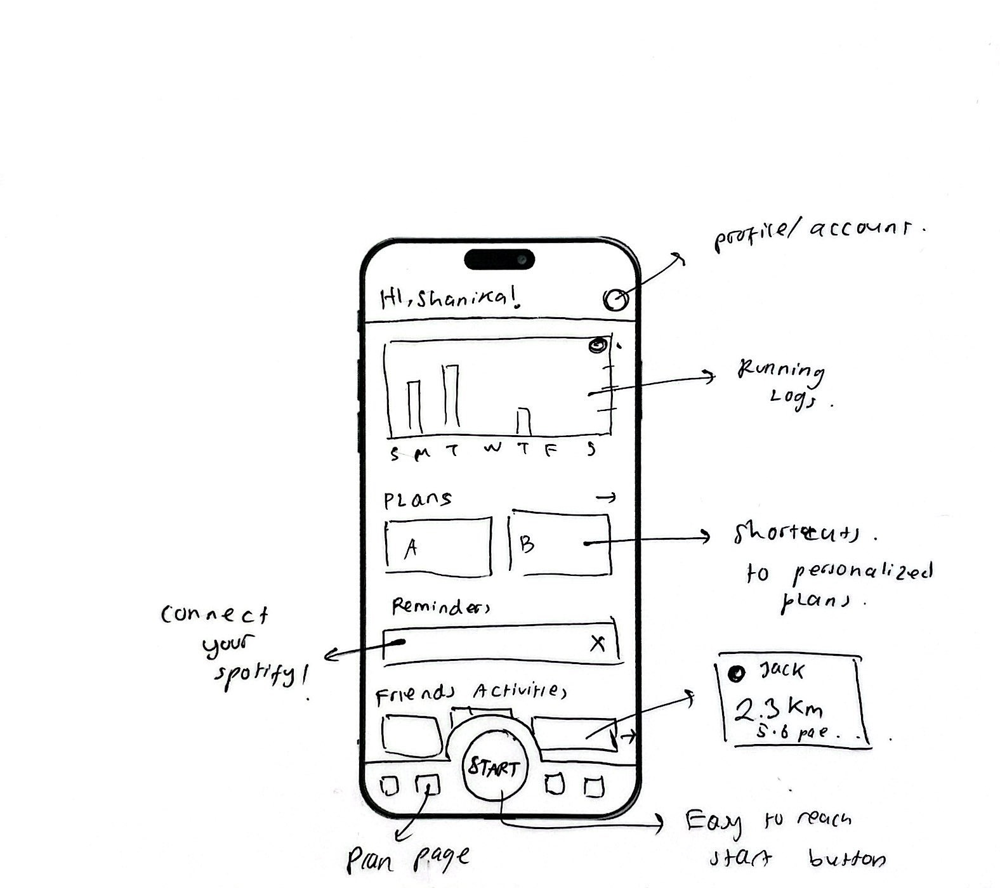
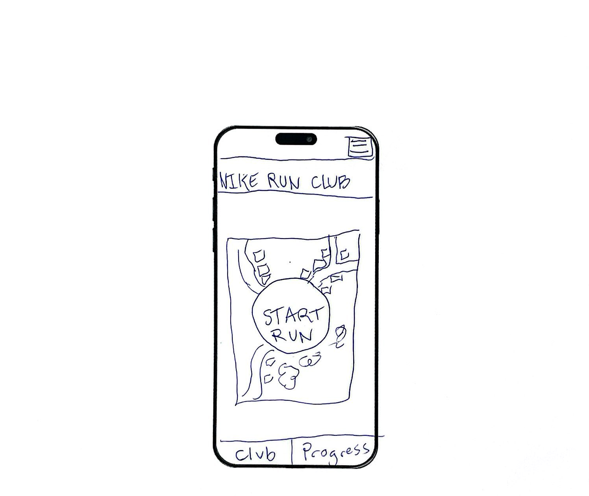
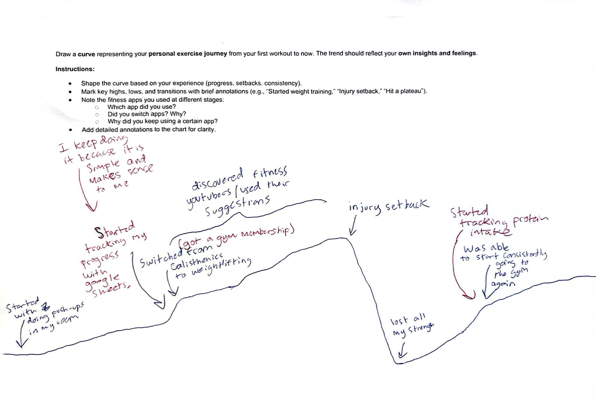
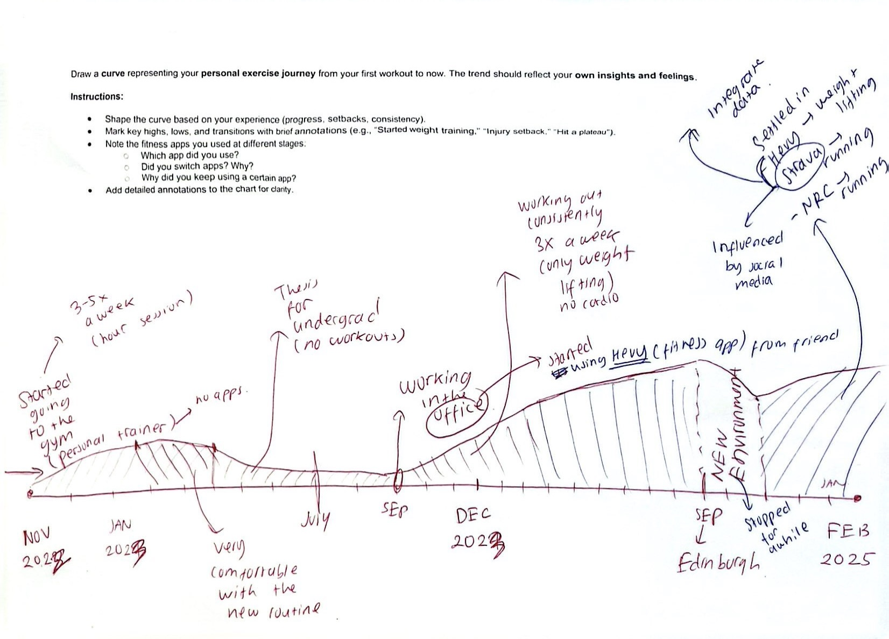

Human Factors in User Research
03/2025-04/2025
Introduction
This study aims to propose user experience (UX)-driven redesign suggestions for the Nike Run Club (NRC) application. To achieve that, the study is conducted in two steps. First, it explores international college students’ exercise habits and interactions with fitness applications through user interviews, usability tests, and cultural probes, gaining insight into their personal experiences. Second, based on these findings, the study develops redesign recommendations for NRC, with a focus on enhancing user experience under the guidance of human factors.
To address research objectives and research questions, I employed a qualitative approach and integrated one each of say, do and make methods.
Say Method: User Interview
For say method, I followed an interview guide. Since using interview as a data source offers arrange of opportunity to interpret the behavioral motivations (de Villiers et al., 2022). Besides, I chose user interview for its flexibility to understand users' insights into their daily routines. By asking open-ended questions, not only the fact has been collected, but also the reason and deep thoughts behind it has been gathered. The interview guide covers three main topics: personal exercise habits, last time exercise experience, and the exercise tracking tools they are using.
Link to the coded-transcript.
Do Method: Usability Test
Since the fact that what people say and what people do might sometime not be consistent, I also used usability test as a do method to check the accuracy and decrease the potential inconsistence. To conduct the test, I prepared 5 tasks for participants to complete on the NRC and asked them to think aloud while they were doing the tasks:
- T1: Simply start a run.
- T2: Please choose an audio tutorial that you like for your first run.
- T3: Imagine that you will have a half-marathon competition a few months later; please now
find out a training plan.
- T4: Find out your running record, and feel free to browse data that you care.
- T5: Now you may want to get involved in the activity that Nike Run Club offers, please have
a look and decide whether you want to attend.
Without interrupting them, every navigation, hesitation, and mistake raised by confusion will be recognized and analyzed. Afterward, participants were asked to answer three follow-up questions which are centered around the usability of the application.
Make Method: Cultural Probe
Finally, participants were asked to draw an “exercise curve” and an “ideal start-page design” as part of the cultural probe. This method enabled them to express deeper insights non-verbally through drawing and mapping, potentially uncovering subconscious or unspoken experiences that interviews might not fully capture. Additionally, the open-ended nature of this activity provided participants with freedom. They could document personal reflections and hidden insights that they may not have been consciously aware of.


Figure 1. Ideal start-page design.


Figure 2. Exercise curve.
Thematic Analysis: Affinity Diagram
The gathered data can be massive and confused. To analyze it, I conducted a thematic analysis of the participants’ responses.
I draw an affinity diagram to better visualize the textual information. These approaches help with the cluster and categorizing of textual information because the key words extracted from the text would clearly represent the main ideas of the sentence in an explicit way. At the same time, since there are only two participants, the amount of data generated is not large. It is very suitable to use thematic analysis because it does not consume too much time.
Figure 3. Thematic Analysis: Affinity Diagram.
This small-scale study might limit representativeness; however, its qualitative nature prioritizes depth over breadth. In this context, I care more about the rich and deep personal understanding rather than the generalized answer. Therefore, while this study involves only two participants from distinct cultural backgrounds (US and Indonesia), this cross-cultural perspective might contribute to valuable findings. However, even though double-check and integration of different method have been adopted to avoid the bias, qualitative research might lead to a subjective interpretation.
Reference
- de Villiers, C., Farooq, M. B., & Molinari, M. (2022). Qualitative research interviews using online video technology – challenges and opportunities. Meditari Accountancy Research, 30(6), 1764–1782. https://doi.org/10.1108/MEDAR-03-2021-1252